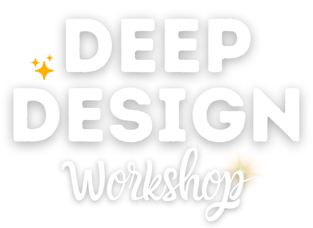
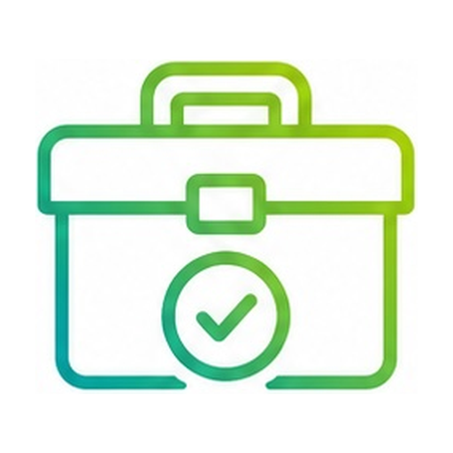
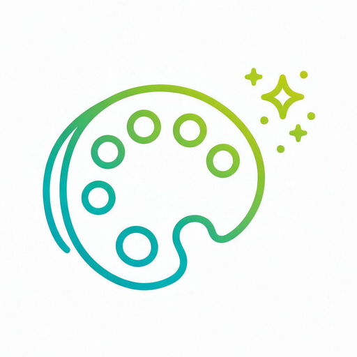
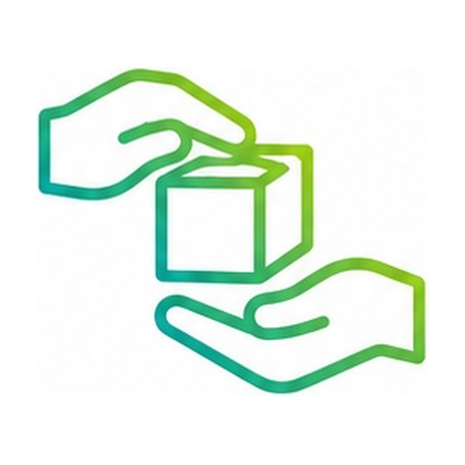
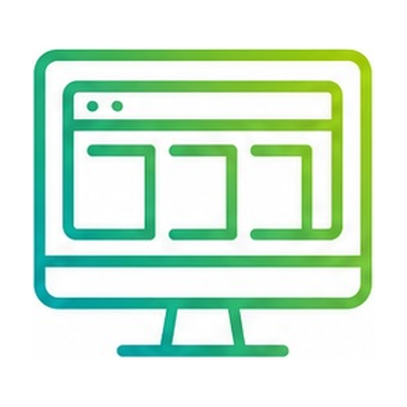
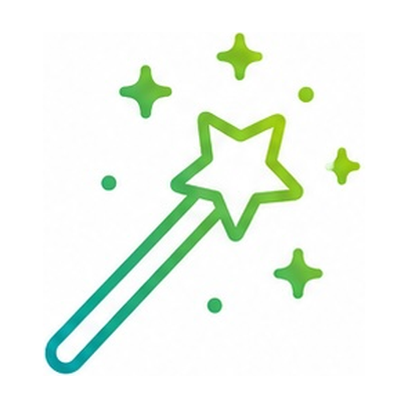
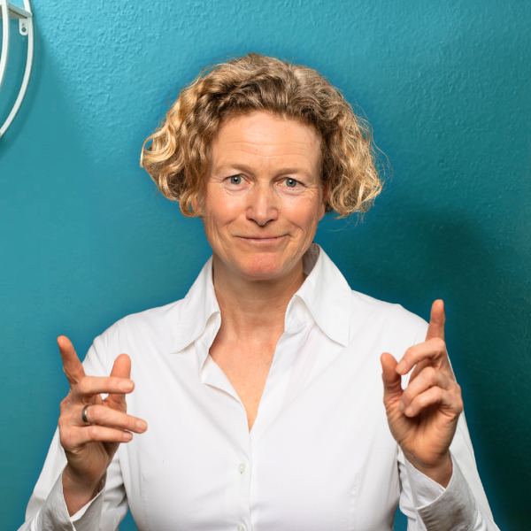

Erstelle Landingpages, Webseiten, Folien, Visuals und Co. verlässlich in deinem eigenen Design!
Für den Workshop anmeldenVielleicht bekommst du schon nach kurzer Zeit eine erstaunlich vollständige Seite präsentiert. Die Farben stimmen ungefähr, vielleicht ist sogar deine Schrift dabei. Und trotzdem schaust du darauf und denkst: „Irgendwie fühlt sich das nicht nach mir an.“ Die Gestaltung ist dir zu verspielt, zu glatt, oder die Bildsprache passt einfach nicht zu dem, was du sonst ausstrahlst.
Also erklärst du der KI, was dir nicht gefällt, und startest einen neuen Versuch. Und dann noch einen. Irgendwann hast du so viel Zeit ins Erklären und Nachbearbeiten gesteckt, dass du überlegst, die Seite doch gleich wieder selbst zu bauen.
„Dabei könnte die KI dir genau bei dieser Arbeit eine enorme Unterstützung sein, wenn sie dein Design nur wirklich verstehen würde. Deshalb nimmst du dir jetzt bewusst die Zeit, dein Design in Ruhe in Worte zu fassen, mit Feedback aus der Gruppe und deiner KI als Sparringspartnerin. Dein bisheriges Design ist ja nicht falsch, es steht nur noch nirgendwo so aufgeschrieben, dass eine KI damit arbeiten kann.“
Genau das ist die Einladung meines DEEP Design Workshops 🤗
Mit Claude Design arbeitest du dein bestehendes Branding Schritt für Schritt durch und übersetzt es in ein ausführliches Designsystem, das du deiner KI jederzeit als Briefing mitgeben kannst. Dazu kommt eine Bibliothek an visuellen Assets und vor allem: funktionierende Prozesse und Workflows, die dich unterstützen und schneller machen.

Claude Design ist ein mächtiges und komplexes Tool, das wir im Workshop nutzen, um dein Designsystem sauber herauszuarbeiten und zu optimieren. Als Grundlage hierfür nutzt du das, was du an Design-Vorlagen bereits hast und/oder weitere Design-Inspirationen aus dem Netz.

Wenn dein System und deine Assetbibliothek einmal stehen, kannst du sie mit jeder KI anwenden und bist nicht an Claude gebunden. Damit lässt du in jedem KI-System Landingpages, Webseiten, Folien oder Ähnliches entwickeln, verlässlich in deinem Design.

Nebenbei frischst du im Workshop dein Branding auf und machst es endlich vollständig. Das kostet sonst bei jeder neuen Landingpage wieder Zeit, jetzt nimmst du dir einmal bewusst Raum dafür.
Hinweis: Die Nutzung von Claude Design ist inklusive im Claude Pro-Preisplan (18 €). Den brauchst du für diesen Workshop für mindestens einen Monat.
Viele Solo-Selbstständige haben längst ein Design. Sie wenden es an, sie können ungefähr sagen, was ihnen gefällt, wenn sie ein Design sehen - und sie merken sofort, wenn etwas nicht zu ihnen passt. Nur in Worte gefasst haben sie es nie, jedenfalls nicht so genau, dass eine KI damit begeisternde Ergebnisse erzeugt. Deshalb rät die KI bisher eher - sie kennt zwar deine Farben und Schriften, aber alles andere (Abstände, Schatten, visuelle Hervorhebungen usw.) improvisiert sie. Was dann oft zu diesem Störgefühl führt, wenn die KI dir etwas designt.
Nach diesem Workshop gibst du deiner KI nicht ein paar Stichworte und hoffst auf das Beste. Du gibst ihr klare, detaillierte Regeln und eine aufgeräumte Bild- und Promptbibliothek, sodass die Ergebnisse schon beim ersten Versuch einen kleinen Glücksmoment auslösen! Und weil du dir dafür jetzt in Ruhe die Zeit nimmst, mit Feedback aus der Gruppe, von mir und mit deiner KI, hast du danach eine Basis, die bleibt. Ein Designsystem, das du immer wieder verwendest und das im Laufe der Zeit immer besser wird.
Die praktische Arbeit im Workshop dreht sich am Anfang erstmal um Landingpages (alternative einzelne Webseiten), weil das der häufigste Anwendungsfall ist. Außerdem laufen hier Struktur, Text, Bildsprache, Typografie und Abstände zusammen, deshalb ist eine Landingpage das ideale Übungsfeld für dein neues Designsystem.
Danach widmen wir uns dann dem Aufbau deiner Bild- und Asset-Bibliothek, wie z.B. Icons, Piktogramme, Hintergründe, Schmuckelemente etc. - sowie dem Erstellen von weiteren Design-Vorlagen, z.B. für Folien oder Visuals.

Erste Workshop-HälfteDu entwickelst dein Designsystem und wendest es direkt auf eine konkrete Landingpage an. So merkst du sofort, was schon trägt und wo du dein System noch schärfen willst.

Zweite Workshop-HälfteDaraus leitest du Vorlagen und Regeln für Folien, Social-Media-Visuals, Icons und andere wiederkehrende Business-Assets ab.
Sei dabei bei meinem Deep Design Workshop und lerne, wie du mit der KI wirklich GUTES Design hinbekommst. Nicht nur "irgendwie beeindruckend", sondern so, dass deine Energie und der Kern deiner Botschaft von deinem Design gut unterstützt wird.
Es macht Spaß, sich solche Dinge gemeinsam mit anderen zu erarbeiten - ich werde einen schönen Raum für unsere Gruppe schaffen!
Für den Workshop anmeldenFünf Tage, Donnerstag bis Mittwoch. Der Donnerstag ist der Haupttag: Da legst du gemeinsam mit mir das Fundament, alles Weitere baut direkt darauf auf.
Hier bekommst du das komplette Handwerkszeug für dein Designsystem: 90 Minuten Input, in denen wir Schritt für Schritt durchgehen, wie du dein Design in ein Briefing verwandelst, mit dem jede KI arbeiten kann. Direkt im Anschluss legst du los und baust deine erste Landingpage zum Testen, und am Nachmittag bekommst du in der Sprechstunde persönliches Feedback dazu.
Du bekommst bei Bedarf mittags direktes Feedback zu dem, was du dir seit Donnerstag erarbeitet hast, stellst deine Fragen - und schärfst danach dein System weiter.
An diesem Tag geht es um alles, was dein Design im Alltag greifbar macht: eine eigene Bibliothek an Bild-Prompts und Icons, Hintergrundbildern, Pictogrammen oder ähnliches, mit denen du künftig in Minuten statt Stunden Landingpages, Folien etc. bauen lässt. Außerdem erkläre ich dir, welche Möglichkeiten du hast, deine fertige Seite anschließend online zu stellen.
Zeit, ganz in deinem Tempo umzusetzen: Du baust Landingpages und weitere Designelemente eigenständig weiter und holst dir bei Bedarf Feedback im Forum. Kein Live-Termin.
Zum Abschluss geht dein Designsystem über die Landingpage hinaus: Du lernst, wie du daraus Vorlagen für Folien und weitere Visuals ableitest, damit du auch bei ganz anderen Aufgaben schnell und stimmig unterwegs bist. Danach triffst du dich noch einmal mit mir und der Gruppe im Abschluss-Meeting, um alles Offene zu klären.
Insgesamt sind es 3 Input-Webinare und 3 optionale Sprech- und Feedback-Meetings.
Mit diesem Workshop richte ich mich an Solo-Selbständige, die häufiger Webseiten, Landingpages, Kurs-Lektionen, Arbeitsblätter, Foliensätze oder Social-Media-Visuals gestalten - und sich dabei gern mehr von der KI unterstützen lassen wollen.
Dabei spielt es keine Rolle, ob du ChatGPT, Gemini oder noch ein anderes KI-Tool nutzt. Und es ist auch egal, ob du schon Erfahrungen damit hast, dir bspw. Webseiten von KI erstellen zu lassen - das lernst du im Workshop!
Es gibt aber ein paar Punkte, die wichtig sind, um zu entscheiden, ob der Workshop das Richtige für dich ist:

und seit über 13 Jahren soloselbstständig. Ich kann also die Landingpages, Vorschaubilder, Arbeitsblätter und Webinarfolien gar nicht mehr zählen, die ich im Laufe der Zeit gestaltet habe. 😅 Gutes Design ist mir wirklich wichtig - für mich steckt da auch mein innerer Ausdruck drin - daher war es lange Zeit keine echte Option, die KI dafür um Hilfe zu bitten. Zu unzuverlässig waren die Ergebnisse... Meist eher frustrierend - also habe ich es dann doch wieder per Hand gemacht (Landingpages bspw. in Wordpress mit Thrive Architect).
Und jetzt endlich, seit ich mir mit Claude Design einmal intensiv die Zeit genommen habe, ein tragfähiges System aus Design-Regeln, Vorlagen und visuellen Assets aufzubauen, kann ich diese Aufgaben zu einem Großteil an die KI delegieren! Und das ist sehr entlastend.
Ich bin keine ausgebildete Designerin, aber habe ein gutes Gespür für stimmiges Design - und vor allem kann ich dir beibringen, wie du den Design-Prozess so aufbaust, dass er für DICH ganz persönlich gut funktioniert, Spaß macht und dich in deine Kraft bringt.
Ja, die KI trifft deinen Geschmack und deinen Stil danach viel genauer. Der Unterschied ist, dass du dir einmalig die Mühe machst, dein bisher eher implizites Wissen darüber, was gutes Design für dich ausmacht, in Worte zu fassen. Danach muss die KI nicht mehr raten, was dir gefallen könnte. Sie arbeitet nach deinen klaren Regeln, die du natürlich jederzeit verfeinern und ergänzen kannst.
Wenn du mit deinem Design-Prozess zufrieden bist, brauchst du natürlich nichts zu ändern. Wenn du mit Hilfe der KI schneller werden willst, macht mein Workshop absolut Sinn für dich. Du machst es dann von Anfang an gleich "richtig", so wie du auch eine neue Designerin erst briefen würdest, bevor sie für dich arbeitet.
Canvas eigene KI-Funktion überzeugt mich bisher nicht, aber wir können Canva trotzdem weiterhin gut für einzelne Aufgaben nutzen, darauf gehe ich im Workshop auch ein.
Donnerstag, 24.09.: 9:30 bis 11:00 Uhr Live-Workshop 1, 17:00 bis 18:00 Uhr Sprechstunde (optional).
Freitag, 25.09.: 13:00 bis 14:00 Uhr Sprechstunde & Feedback.
Montag, 28.09.: 9:30 bis 11:00 Uhr Live-Workshop 2.
Dienstag, 29.09.: kein Live-Termin, ganztägig eigenständige Umsetzung.
Mittwoch, 30.09.: 9:30 bis 11:00 Uhr Live-Workshop 3, 17:00 bis 18:00 Uhr Abschluss-Meeting & Sprechstunde.
Alle Input-Webinare stehen dir zeitnah als Aufzeichnung zur Verfügung, inklusive Transkript, das du direkt mit deiner eigenen KI zum Nacharbeiten nutzen kannst. Besonders wichtig ist der Donnerstag, an dem ich das gesamte System und Vorgehen erkläre, den solltest du wenn möglich live oder kurz danach mitnehmen.
Nein, das brauchst du nicht. Das ist zwar eine super Ergänzung für Claudes KI-Assistenten, aber das Designsystem, das wir im Workshop entwickeln, kannst du mit jedem Chatbot oder jedem anderen KI-System verwenden, zum Beispiel Gemini, ChatGPT oder anderen. Du erstellst dann für eine Landingpage eine HTML-Seite, und im Workshop zeige ich dir, wie du diese manuell ins Internet bringst.
Wenn du einen KI-Assistenten wie Claude Cowork verwendest, kannst du diese Aufgabe an die KI delegieren, und sie stellt dir die Seite automatisch ins Netz. Das ist aber nicht zwingend nötig. Allerdings brauchst du für diesen Workshop mindestens einen Monat Claude Pro für 18 € im Monat.
Stimmt. Wenn du sehr autodidaktisch bist, kommst du damit zurecht. Dieser DEEP Design-Workshop geht tiefer: Wir verfeinern dein Designsystem gemeinsam, es gibt direktes Feedback von mir und den anderen Teilnehmenden - und wir werden eine richtige Bibliothek an visuellen Assets für dich aufbauen.
Außerdem gibt so ein zeitlich terminierter Workshop ja auch eine gewisse Verbindlichkeit vor, damit du diese Aufgabe auch tatsächlich angehst, die sonst im Alltag untergeht. 😉
Nein, im Gegenteil. Der Workshop zeigt dir, wie du deinen Kund:innen ein System an die Hand gibst, mit dem sie das gemeinsam entwickelte Design selbstwirksam und selbstbewusst weiter umsetzen können, statt es im DIY-Alltag nach und nach zu verwässern. Für den Aufbau des ursprünglichen Designs braucht es weiterhin dich, das bleibt ein strategischer Prozess. Ist das Design einmal da, lässt es sich der KI in ihrer Sprache übergeben.
Nein, keine Ausbildung in der Richtung. Aber ich habe eine überdurchschnittliche Affinität und ein gutes Gespür für stimmiges Design, dazu einige selbst erarbeitete Designregeln. Gutes Design ist mir persönlich wichtig, deshalb kann ich dich mit meinem Feedback gut dabei unterstützen, dein Branding zu verfeinern.
Dieser Workshop richtet sich ausschließlich an Selbstständige und Unternehmer:innen, deshalb gibt es grundsätzlich kein Rückgaberecht. Schreib mir aber gern bis eine Woche vor Workshop-Start eine Mail mit deiner Begründung, dann sprechen wir über einen Rücktritt.
Wenn deine KI dein Design wirklich verstehen soll, ist jetzt ein guter Moment, die Grundlage dafür zu bauen.
Frühbucherpreis, gültig bis einschließlich 16.09.2026
495 € netto Regulärpreis
Jetzt anmeldenVorbereitungsphase · 3 Online-Workshops · 3 Fragen- & Feedback-Meetings · Forum für Austausch · alle Materialien und Aufzeichnungen
Hinweis: Für den Workshop brauchst du mindestens einen Monat Claude Pro (ca. 18 €/Monat).
Dein Design steckt längst in deinem Business. Jetzt darf deine KI es auch verstehen.